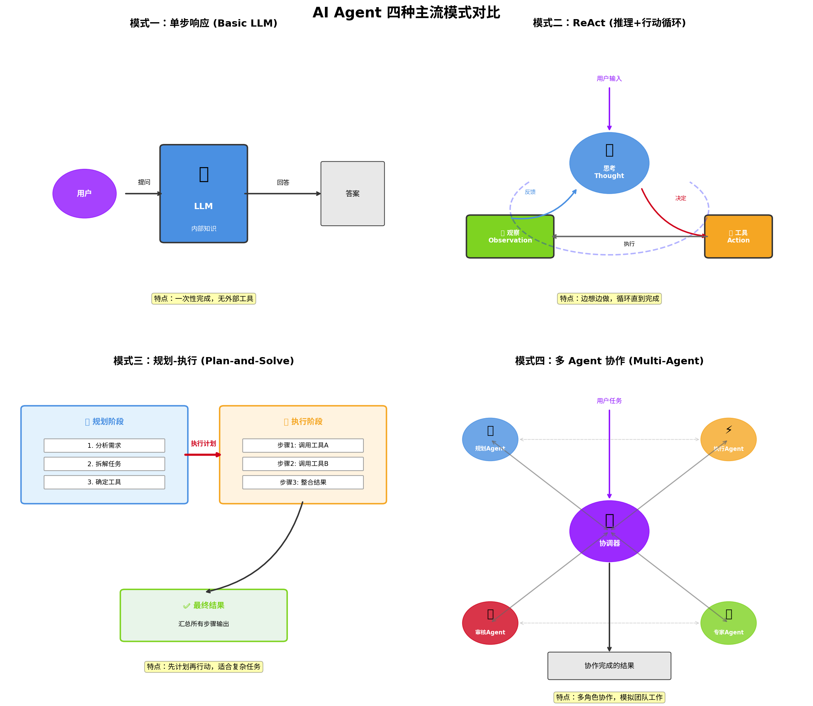

AI Agent 架构
AI Agent 架构

四种模式对比表
| 维度 | 单步响应 | ReAct | 规划-执行 | 多 Agent |
|---|---|---|---|---|
| 复杂度 | 低 | 中 | 中高 | 高 |
| 是否用工具 | ❌ | ✅ | ✅ | ✅ |
| 决策方式 | 一次性 | 边做边想 | 先想后做 | 协商决策 |
| 适合任务 | 简单问答 | 探索性问题 | 流程明确的多步任务 | 复杂协作项目 |
| 典型框架 | 基础 LLM API | LangChain Agent | LangGraph, TOT | AutoGen, CrewAI |
AI Agent 的四种主流工作模式
模式一：单步响应模式（Basic LLM）
工作原理
用户提问 → LLM 直接回答，一次性完成
特点
- 没有外部工具，纯靠模型内部知识
- 速度快，成本低
- 无法获取实时信息，不能执行实际操作
适用场景
简单问答、创意写作、代码解释
一句话总结
“只会动脑子，不会动手，也不会查资料”
模式二：ReAct 模式（推理+行动循环）
工作原理
1 | 思考（Thought）→ 决定行动（Action）→ 观察结果（Observation）→ 再思考... |
特点
- LLM 边想边做，根据工具返回的结果调整下一步
- 形成”思考-行动-观察”的循环
- 能处理需要多步探索的开放性问题
举个例子
用户问：”明天北京天气怎么样？适合穿什么？”
- 思考：需要查天气 → 行动：调用天气 API → 观察：明天 15°C 有雨
- 思考：有雨需要带伞，15°C 需要外套 → 行动：无需再查 → 给出穿衣建议
适用场景
实时信息查询、多步骤问题求解、需要试错探索的任务
一句话总结
“边想边干，看到结果再决定下一步”
模式三：规划-执行模式（Plan-and-Solve）
工作原理
1 | 规划阶段：LLM 把复杂任务拆成步骤清单 |
特点
- 先制定完整计划，再批量执行
- 适合步骤明确、可预见的复杂任务
- 计划可以人工审核修改后再执行
举个例子
用户说：”帮我策划一场 20 人的生日派对”
- 规划：确定预算 → 选场地 → 定餐饮 → 买装饰 → 发邀请 → 准备音乐
- 执行：依次调用预算计算器、场地查询、餐厅预订等工具
适用场景
项目管理、复杂工作流、需要多工具协作的任务
一句话总结
“先写剧本，再按剧本演”
模式四：多 Agent 协作模式（Multi-Agent）
工作原理
多个专业 Agent 分工协作，通过对话完成任务
常见角色
| 角色 | 职责 |
|---|---|
| 规划 Agent | 拆解任务、分配工作 |
| 执行 Agent | 调用工具完成具体动作 |
| 审核 Agent | 检查结果、提出修改意见 |
| 专家 Agent | 特定领域知识（如法律、医疗） |
特点
- 每个 Agent 有专门角色和工具
- Agent 之间可以讨论、辩论、互相纠错
- 模拟团队协作，解决超复杂问题
举个例子
开发一个网站：
- 产品经理 Agent：写需求文档
- 架构师 Agent：设计技术方案
- 程序员 Agent：写代码
- 测试 Agent：检查 Bug
- 他们互相沟通，直到网站完成
适用场景
软件开发、商业分析、科研协作、任何需要多人配合的复杂项目
一句话总结
“一个 Agent 搞不定，就开一个会”
本博客所有文章除特别声明外，均采用 CC BY-NC-SA 4.0 许可协议。转载请注明来源 信安小蚂蚁！